Ford Design Three-Speed Transmission · 16-03-07
Shift Levers and Seals
- Remove the nut, lock washer, and flat washer that secure each shift lever (Fig. 15) to the lever and shaft in the transmission case. Lift the levers off the shaft. Slide each lever and shaft out of the case. Discard the Oring from each shaft.
- Lubricate the new seals with transmission lubricant and install them on the shafts.
- Install the lever and shafts in the
- Position a shift lever on each shaft and secure them with a flat washer, lock washer, and nut.
Input Shaft Bearing
- Remove the snap ring securing the input shaft bearing (Fig. 16), and press the input shaft out of the bearing.
- Press the input shaft bearing onto the input shaft with the tool shown in Fig. 17, and install the snap ring on the shaft.
Synchronizers
-
Push the sychronizer hub from each synchronizer sleeve.
-
Separate the inserts and insert springs from the hubs. Do not mix the parts from the second and third-speed synchronizer with the first and reverse synchronizer (Figs. 18 and 19).
-
Install the rear insert spring in the groove of the first and reverse synchronizer hub. Make sure that the spring covers all insert grooves. Start the hub in the sleeve making sure that the alignment marks are properly indexed. Position the three inserts in the hub making sure that the small end is over the spring and that the shoulder is on the inside of the hub. Slide the sleeve and reverse gear onto the hub until the detent is engaged. Install the front insert spring in the hub to hold the inserts against the hub. Be sure the spring humps of the rear spring cover different inserts than the front spring humps (Fig. 20).
-
Install one insert spring (Fig. 19) into a groove of the second and third speed synchronizer hub, making sure that all three insert slots are fully covered. With the alignment marks on the hub and sleeve aligned, start the hub into the sleeve. Place the three inserts on top of the retaining spring and push the assembly together. Install the remaining insert spring so that the spring ends cover the same slots as does the other spring. Do not stagger the springs. Place a synchronizer blocking ring on each end of the synchronizer sleeve.
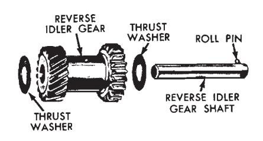
Fig. 13 — Reverse Idler Shaft Disassembled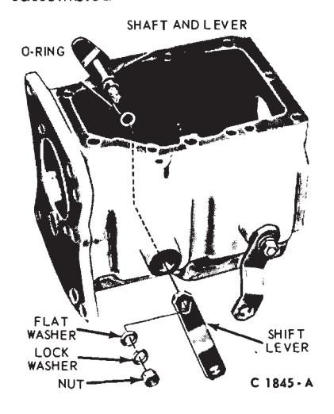
Fig. 15 — Shift Lever and Shaft Disassembled
Countershaft Gear Bearings
-
Remove the dummy shaft, fifty roller bearings, and the two bearing retainer washers from the countershaft gear (Fig. 21).
-
Coat the bore in each end of the countershaft gear with grease.
-
Hold the dummy shaft in the gear and install the twenty-five roller bearings and a retainer washer in each end of the gear.
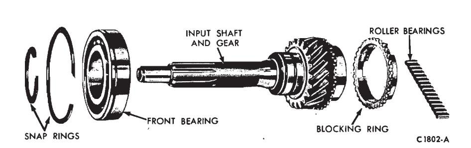
Fig. 16 — Input Shaft Gear Disassembled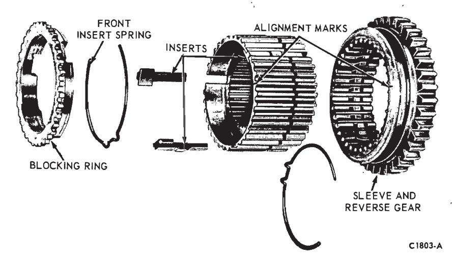
Fig. 18 — First and Reverse Synchronizer Disassembled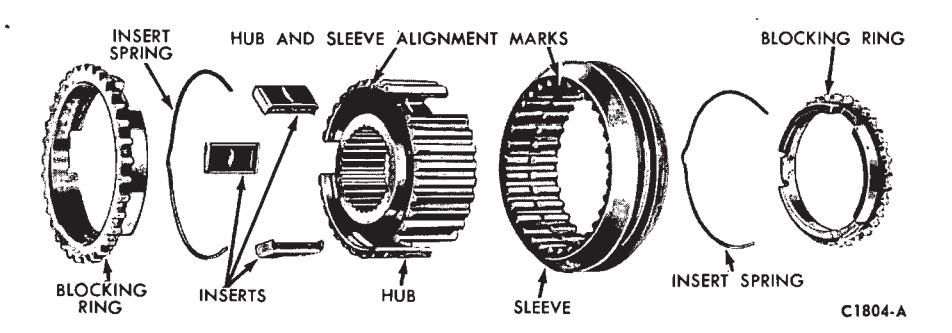
Fig. 19 — Second and Third Synchronizer Disassembled -
Position the countershaft gear, dummy shaft, and roller bearings in the case.
-
Place the case in a vertical position. Align the gear bore and the thrust washers with the bores in the case and install the countershaft.
-
Place the case in a horizontal position and check the countershaft gear end play with a feeler gauge. The end play should be within specification. If not within specification, replace the thrust washers.
-
After establishing the correct end play, install the dummy shaft in the countershaft gear and allow the gear to remain at the bottom of the case until the output and input shafts have been installed.
Gear Shift Lever and Control Assembly Floor-Mounted
-
Remove the four screws attaching the lower boot to the floor pan.
-
Remove the two bolts attaching the gear shift lever to the control assembly.
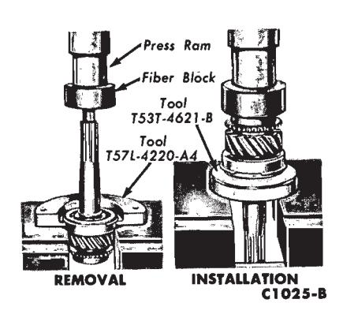
Fig. 17 — Replacing Input Shaft Bearing -
Remove the two piece lock nuts that connect the shift rods to the control assembly.
-
Remove the three bolts retaining the shift control assembly to the extension housing. Allow the back-up light switch to hang free.
-
Lower the control assembly from the vehicle and remove the boot.
-
Remove the nut from the selector lever shaft and remove the shaft from the assembly. Then, lift the selector arm and selector levers out of the support bracket. Do not lose the detent spring located between the first-reverse selector lever and the selector arm (Fig. 22).
-
Lubricate all mating surfaces with lithium grease before assembly.
-
Position the detent spring between the first-reverse selector lever and the selector arm. Be sure the wide base of the spring rests against the selector lever. Position the second-third selector lever against the selector arm and insert the entire assembly into the support bracket.
-
Install the selector lever shaft through the support bracket and selector lever assembly and install the retaining nut.
-
Slide the control assembly into the boot and attach the entire assembly to the extension housing. Do not lose the spacer located inside the assembly. Be sure the back-up light switch is properly installed.
-
Install the two bolts securing the gear shift lever to the shift control assembly.
-
Insert a 1/4 inch diameter alignment pin in the alignment holes of the control assembly.
-
Position the shift rods on the selector levers and install the lock nuts.
-
Remove the alignment pin.
-
Check the operation of the shift mechanism for smooth cross-over and adjust as required.
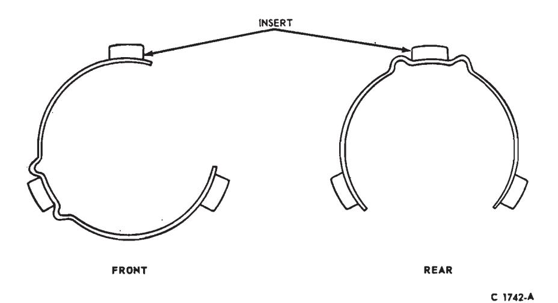
Fig. 20 — First and Reverse Speed Synchronizer Insert Spring Installation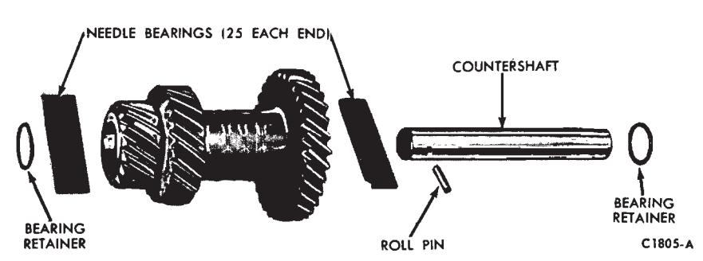
Fig. 21 — Countershaft Gear Disassembled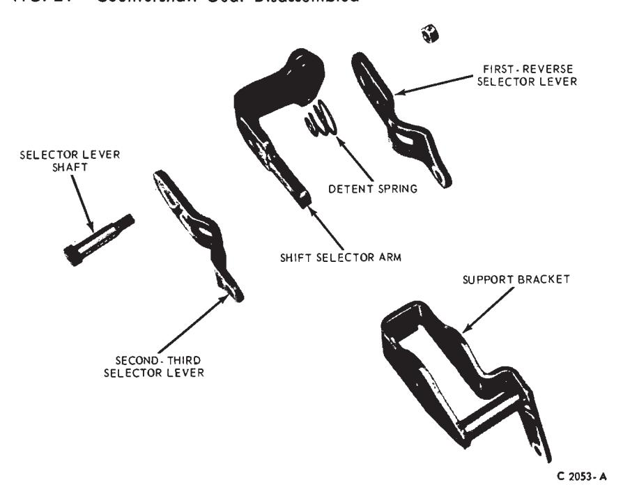
Fig. 22 — Gear Shift Control Assembly Disassembled—3-Speed
Assembly
-
Coat the reverse idler gear thrust surfaces in the case with a thin film of lubricant and position the two thrust washers in place.
-
Position the reverse idler gear and dummy shaft in place. Align the gear bore and thrust washers with the case bores and install the reverse idler shaft.
-
Measure the reverse idler gear end play with a feeler gauge. End play should be within specification. If the end play is not within specification, replace the thrust washers. If the end play is within limits, leave the reverse idler gear installed.
-
Lubricate the output shaft splines and machined surfaces with transmission lubricant.
-
The first and reverse synchronizer hub is a press fit on the output shaft. To eliminate the possibility of damaging the synchronizer assembly, install the synchronizer hub with the teeth end of the gear facing toward the rear of the shaft, using an arbor press as shown in Fig. 23. Do not attempt to remove or install the hub by hammering or prying.
-
Place the blocking ring on the tapered machined surface of the first gear.
-
Slide the first gear onto the output shaft with the blocking ring toward the rear of the shaft. Rotate the gear as necessary to engage the three notches in the blocking ring with the synchronizer inserts. Secure the first gear with the thrust washer and snap ring.
-
Slide the blocking ring onto the tapered machined surface of the second gear. Slide the second gear with blocking ring and the second and third gear synchronizer onto the mainshaft. The tapered machined surface of the second gear must be toward the front of the shaft. Make sure that the notches in the blocking ring engage the synchronizer inserts. Secure the synchronizer with a snap ring.
-
Coat the bore of the input shaft and gear with a thin film of grease. A thick film of grease will plug the lubricant holes and prevent lubrication to the bearings. Install the 15 bearings (Fig. 16) in the bore.
-
If working on a RAT model transmission, install the input gear and bearing through the top of the case and through the bore in front of the case. On RAN models, the input shaft is installed through the front of the transmission. Install the snap ring in the bearing groove.
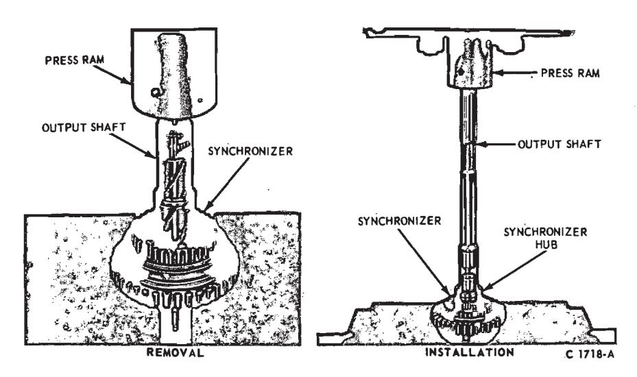
Fig. 23 — Removing and Installing First and Reverse Synchronizer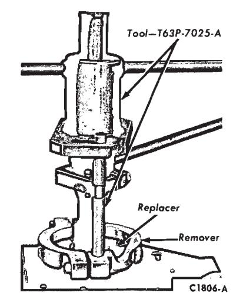
Fig. 24 — Installing Output Shaft Rear Bearing -
Position the output shaft assembly in the case. Position the second and third-speed shift fork on the second and third-speed synchronizer.
-
Place a detent plug spring and a plug in the case (Fig. 9). Place the second and third-speed synchronizer in the second speed position (toward rear of transmission). Align the fork and install the second and third-speed shift rail. It will be necessary to depress the detent plug to enter the rail in the bore. Move the rail inward until the detent plug engages the forward notch (second-speed position).
-
Secure the fork to the shaft with the set screw. Move the synchronizer to the neutral position.
-
Install the interlock plug in the case. If the second and third-speed shift rail is in the neutral position, the top of the interlock will be slightly lower than the surface of the first and reverse shift rail bore.
-
Move the first and reverse synchronizer forward to the first-speed position. Place the first and reverse shift fork in the groove of the first and reverse synchronizer. Rotate the fork into position and install the first and reverse shift rail. Move the rail inward until the center notch (neutral) is aligned with the detent bore. Secure the fork to the shaft with the set screw.
-
Install a new shift rail expansion plug in the front of the case.
-
Hold the input shaft and blocking ring in position. Then move the output shaft forward to seat the pilot in the roller bearings of the input gear.
-
Tap the input gear bearing into place in the case while holding the output shaft to prevent the roller bearings from dropping. Install the front bearing retainer and new gasket making sure that the oil return slot is at the bottom of the case. Install and torque the attaching screws to specification.
-
Install the large snap ring on the rear bearing. Place the bearing on the output shaft with the snap ring end toward the rear of the shaft. Press the bearing into place with the tool shown in Fig. 24. Secure the bearing to the shaft with a snap ring.
-
On some models, hold the speedometer drive gear lock ball in the detent and slide the speedometer drive gear into place. Secure the gear with a snap ring. On models equipped with the new design retainer, install the speedometer drive gear retaining clip on the shaft with the lower tang in the retaining hole. Align the groove in the gear with the clip and slide the gear forward until the upper tang on the clip locks the gear (Fig. 10).
-
Place the transmission in the vertical position. Working through the drain hole in the bottom of the case, align the bore of the countershaft gear and the thrust washers with the bore of the case with a screwdriver
-
Working from the rear of the case, push the dummy shaft out of the countershaft gear with the countershaft. Before the countershaft is completely inserted in the bore, make sure that the hole that accommodates the roll pin is aligned with the hole in the case. Drive the shaft into place and install the roll pin. On all 8 cylinder vehicles and Ford 6 cylinder models, the countershaft is a press fit in the case. On 6 cylinder models with model RAN transmissions there is a countershaft-to-case clearance of 0.020 inch at the front bore and 0.010 at the rear bore. On these 6 cylinder models, install a new expansion plug in the countershaft bore at the front of the case.
-
Coat a new extension housing gasket with sealer and position it on
-
Install lock washers on the five attaching screws. Dip the threads of the cap screws in sealer. Secure the housing to the case and torque the cap screws to specification.
-
Install the filler and drain plugs (if equipped) in the case. Make sure that the magnetic plug is installed in the bottom of the case.
-
Place the transmission in gear. Pour lubricant over the entire gear train while rotating the input or output shaft.
-
Install the remaining detent plug in the case. Install the long spring (which is retained by the case) to secure the detent plug.
-
Coat a new cover gasket (Fig. 6) with sealer. Secure the cover with cap screws. Torque the screws to specification.
-
Check the operation of the transmission in all of the gear posi-